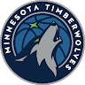
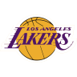

Minnesota Timberwolves
9th in the Western Conference
- Games
- News
- Standings
- Players
NBA - Today, 9:00 PM
Minnesota Timberwolves
(16-18)
at
Los Angeles Lakers
(18-19)
https://www.nba.com › timberwolves
The Official Site of the Minnesota Timberwolves
2 days ago — The official site of the Minnesota Timberwolves. Includes news, scores, schedules, statistics, photos and video.
https://www.espn.com › min › minnesota-timberwolves
Timberwolves News, Scores, Stats, Rumors & More - ESPN
Dec 17, 2021 — Get the latest Minnesota Timberwolves news, scores, stats, standings, rumors, and more from ESPN.
https://www.instagram.com > timberwolves
Minnesota Timberwolves - Instagram
2.3m Followers, 171 Following, 8302 Posts - See Instagram photos and videos from Minnesota Timberwolves (@timberwolves)
https://en.wikipedia.org › wiki › Minnesota_Timberwol...
Minnesota Timberwolves - Wikipedia
The Minnesota Timberwolves are an American professional basketball team based in Minneapolis. The Timberwolves compete in the National Basketball ...